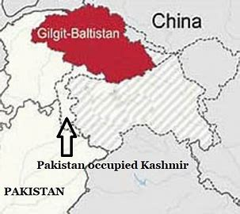
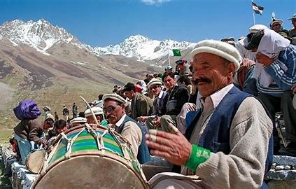

History of Giglit Baltistan

Gilgit-Baltistan has a rich history that dates back thousands of years. This region has been at the crossroads of various civilizations, with influences from the Persian Empire, Tibetan Empire, and later the British Empire. The region was an important part of the Silk Road, connecting traders from China, Central Asia, and Europe.
Over the centuries, Gilgit-Baltistan has seen the rise and fall of various kingdoms and empires, each leaving its mark on the culture and architecture of the region. The historical forts, ancient petroglyphs, and ruins scattered across the area are a testament to its vibrant past.
Geography
Gilgit-Baltistan is renowned for its breathtaking landscapes, characterized by towering mountains, deep valleys, and crystal-clear rivers. The region is home to some of the world's highest peaks, including K2, the second-highest mountain on earth.
The diverse geography of Gilgit-Baltistan offers a range of climates, from the arid deserts of Skardu to the lush green meadows of Hunza. The region's rivers, such as the Indus and Gilgit, have carved out spectacular valleys, making it a paradise for nature lovers and adventurers alike.
Culture and Traditions
The culture of Gilgit-Baltistan is as diverse as its landscape. The region is home to a variety of ethnic groups, each with its own unique traditions, languages, and customs. The people of Gilgit-Baltistan are known for their hospitality, and the region's festivals are vibrant celebrations of music, dance, and food.
Traditional dress varies across the region, with each area having its own distinctive style. Handicrafts, such as woven carpets, wooden carvings, and embroidered clothing, are an integral part of the local culture. The rich cultural heritage of Gilgit-Baltistan is preserved in its music, folklore, and oral traditions, passed down through generations.